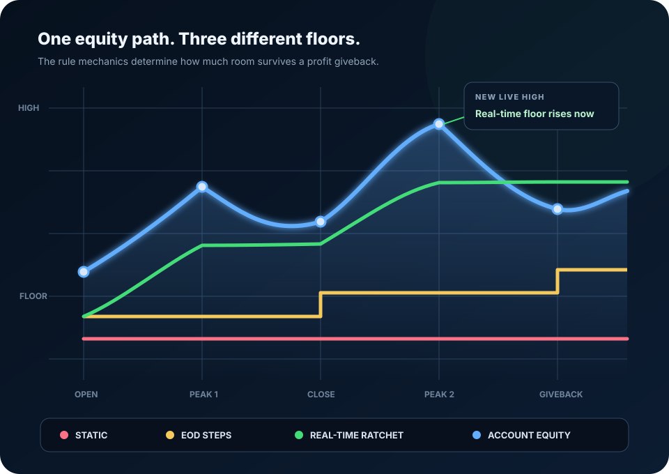

Authoritative futures prop-account guide
Static vs. Trailing Drawdown in Futures Prop Accounts
The label is only the beginning. To know the real breach risk, identify what value the rule monitors, when the floor moves, how it locks or resets, and when enforcement occurs.

The core difference
Static Describes a Fixed Floor. Trailing Describes a Moving Floor.
A drawdown floor is the account value that must not be reached or crossed under the applicable rule. A static floor normally stays at its stated level as profits accumulate. A trailing floor can ratchet upward after the account establishes a new reference high.
A fixed failure boundary
The floor does not rise merely because the account makes money. Other rules can still impose daily, position, or consistency limits.
A ratcheting failure boundary
The floor rises after a qualifying high. It normally does not fall when the account gives profits back, so room can contract quickly.
The actual breach test
The rule must say whether current equity, balance, or another value is compared with the floor—and whether touching or crossing it fails the account.
The number that matters
Measure Room Above the Current Floor
The advertised account label is not loss capacity. The operational number is the distance between the rule’s monitored account value and the current breach floor, minus a reserve that is never assigned to a planned trade.
Raw room
monitored equity − current breach floor
This is the unprotected distance to the failure boundary right now.
Usable room
raw room − safety reserve
The reserve absorbs slippage, rule-display lag, open-position movement, and execution mistakes.
Planned trade risk
must remain below usable room
Position sizing must also account for stop distance, tick value, commissions, and expected slippage.
For the complete contract-sizing calculation, use the companion guide: Risk Per Trade for Small Futures Accounts.
Read the rule as a risk engine
The Six Inputs Required to Decode Any Drawdown Rule
“Static,” “trailing,” and “end of day” are summaries. A usable rule model needs six specific inputs from the firm’s current official documentation and the live account dashboard.
-
1
Reference value
What creates a new high: current equity, closed balance, realized profit, end-of-day balance, or another defined measure? If unrealized P/L counts, a temporary favorable excursion may move the floor before the position closes.
-
2
Update timing
Does the floor recalculate tick by tick, after a trade closes, at an end-of-day checkpoint, or only after another event? Record the firm’s time zone and session boundary.
-
3
High-water mark
Which highest qualifying value is retained? A ratchet remembers the high even after equity falls, which is why profitable movement can reduce later giveback room.
-
4
Floor formula
How is the breach floor calculated from the high-water mark and allowance? Confirm whether fees, commissions, or withdrawals affect either value.
-
5
Cap, lock, and reset behavior
Does the floor stop trailing at a defined level? Can a payout, new account phase, or withdrawal change the floor or available room? Never assume every program locks at starting balance.
-
6
Breach condition and enforcement
Is the account failed when equity touches the floor, falls below it, or closes below it? Is the test continuous, end of trade, or end of day? Is liquidation automatic?
Rule taxonomy
Static, Real-Time Trailing, and End-of-Day Trailing
The formulas below are generic teaching models. A firm’s documented cap, lock, reset, payout, touch, and fee rules always control the actual account.
Static drawdown
static floor = starting reference − drawdown allowance
The floor is established from a fixed reference and does not rise solely because the account reaches a new profit high. If a $50,000 reference has a $2,000 static allowance, the generic floor is $48,000. At $51,000 equity, raw room is $3,000; after falling to $49,000, raw room is $1,000.
- What profits do: expand distance above the fixed floor.
- What profits do not do: drag the static floor upward.
- What to verify: whether a separate daily loss limit, payout rule, or phase change creates another controlling boundary.
Real-time equity trailing
uncapped floor = highest qualifying live equity − allowance
The high-water mark can update while a position is still open if the rule counts unrealized equity. If equity peaks at $51,400 with a $2,000 allowance, the generic uncapped floor becomes $49,400. A reversal to $50,000 leaves only $600 of raw room even if no profit was closed.
For another plain-language walkthrough of this moving-floor behavior, see MimikTrader’s explanation of trailing drawdown.
- Main hazard: open profit can tighten the floor before the trade is exited.
- Asymmetry: the floor ratchets up at a qualifying high but normally does not follow equity back down.
- What to verify: the exact equity source, update frequency, cap, and whether fees are included.
End-of-day trailing
uncapped floor = highest recorded EOD balance − allowance
The floor usually steps upward only when the rule takes its end-of-day snapshot. An intraday peak that disappears before the checkpoint may not establish a new floor. But once the next floor is set, the firm may compare live equity against it continuously.
- Main benefit: an unrealized intraday peak does not necessarily move the floor immediately.
- Main hazard: yesterday’s strong close can raise today’s floor and reduce today’s giveback room.
- What to verify: checkpoint time, balance definition, holiday/session treatment, and intraday enforcement.
Closed-balance or per-trade trailing
floor updates after a qualifying realized event
Some rule sets use realized or closed balance rather than every unrealized tick or one daily checkpoint. This is neither identical to live equity trailing nor identical to EOD trailing. The rule must define precisely when a realized result becomes part of the high-water mark.
- Main hazard: assuming “trailing” always means live unrealized equity.
- What to verify: partial exits, commissions, multiple simultaneous positions, and cross-account calculations.
Side-by-side mechanics
What Changes Across the Main Drawdown Models
| Feature | Static | Real-time trailing | End-of-day trailing |
|---|---|---|---|
| Generic reference | Starting value | Highest qualifying live equity | Highest qualifying EOD balance |
| Floor movement | Does not trail profits | Can ratchet intraday | Steps at scheduled checkpoints |
| Unrealized peak moves floor? | No, by itself | Yes, when live equity is the reference | Not before the EOD checkpoint |
| Profit giveback | Reduces room only as equity falls | Can rapidly compress room after a new peak | Can compress next-session room after a strong close |
| Breach timing | Provider-specific. Any model can be paired with continuous, event-based, or checkpoint enforcement. | ||
| Cap or lock | Provider-specific. Never infer a cap from the category name. | ||
The timing distinction that prevents breaches
Floor Update Timing Is Not Enforcement Timing
Separate the question “When is the floor recalculated?” from “When is the account liquidated or failed?” They can have different answers.
The floor and enforcement can both move live
- Open: equity is $50,400; floor is $48,400.
- Peak: unrealized equity reaches $51,400; floor ratchets to $49,400.
- Giveback: equity falls to $50,000; floor stays $49,400.
- Room: only $600 remains before any reserve.
The floor can update once and be enforced all session
- Prior close: EOD balance is $50,800.
- Next floor: with a $2,000 allowance, it steps to $48,800.
- Today: an intraday high may not move that floor.
- Enforcement: live equity can still be tested against $48,800 continuously.
Topstep describes a Maximum Loss Limit that is recalculated from end-of-day balance while current equity is monitored against the resulting limit in real time. TradeDay likewise distinguishes an end-of-day calculation from intraday breach monitoring. Apex’s intraday trailing documentation describes a threshold that can react to realized and unrealized gains in real time. These are examples of different implementations—not universal rules for every product or account phase.
Interactive teaching tool
Compare the Same Account Under Three Generic Floors
Enter one account state to see how static, uncapped real-time trailing, and uncapped end-of-day trailing formulas produce different room. The tool runs entirely in your browser and sends no account values anywhere.
Calculated comparison
Current account room
- Raw room
- $2,600.00
- Usable after reserve
- $2,300.00
Room remains above reserve.
- Raw room
- $1,200.00
- Usable after reserve
- $900.00
Room remains above reserve.
- Raw room
- $1,800.00
- Usable after reserve
- $1,500.00
Room remains above reserve.
Under these inputs, real-time trailing leaves the least usable room.
Worked account mechanics
Four Examples That Expose the Real Difference
Each example isolates one rule behavior. Dollar amounts are illustrative rather than recommendations or representations of a particular current program.
Closed profit creates durable room
A $50,000 reference with a $2,000 static allowance creates a $48,000 floor. After equity rises to $51,200, the floor is still $48,000. With a $400 reserve, usable room is $2,800.
| Static floor | $50,000 − $2,000 | $48,000 |
|---|---|---|
| Raw room | $51,200 − $48,000 | $3,200 |
| Usable room | $3,200 − $400 reserve | $2,800 |
Unrealized profit tightens the floor before exit
Equity reaches an unrealized peak of $51,400, so an uncapped $2,000 trail rises to $49,400. The position reverses and equity is $49,850 before exit. Raw room is only $450; a $300 reserve leaves $150 usable.
| Trailing floor | $51,400 peak − $2,000 | $49,400 |
|---|---|---|
| Raw room after giveback | $49,850 − $49,400 | $450 |
| Usable room | $450 − $300 reserve | $150 |
The close sets tomorrow’s floor
The highest recorded EOD balance becomes $51,000, creating a $49,000 floor for the next session under an uncapped $2,000 trail. Today’s live equity is $49,700. Even if the floor will not recalculate until the next checkpoint, current room is only $700.
| Current EOD-derived floor | $51,000 EOD high − $2,000 | $49,000 |
|---|---|---|
| Raw room today | $49,700 − $49,000 | $700 |
| Usable room | $700 − $300 reserve | $400 |
The reserve consumes the remaining room
Current monitored equity is $49,620 and the live floor is $49,400. Raw room is $220, less than the trader’s $300 reserve. The correct planned risk is zero—not a smaller arbitrary contract recommendation.
| Raw room | $49,620 − $49,400 | $220 |
|---|---|---|
| Reserve requirement | Protected from trade risk | $300 |
| Decision | $220 − $300 | No trade |
When the floor gets close
Contract Size Must Shrink With Usable Room
A breach floor is not a stop-loss target. Orders can slip, dashboards can update after market data, commissions reduce equity, and a live trailing rule may tighten while the position is open. A separate safety reserve keeps those risks outside the planned trade budget.
As usable room contracts, the allowed dollar risk and contract count must contract with it. If the technically valid stop for one contract costs more than the planned risk budget, the trade does not fit. Moving the stop closer merely to force a contract into the account changes the trade thesis rather than solving the risk problem.
Use the step-by-step calculation in the real drawdown-buffer sizing guide, and review how automated liquidation rules can end an account before treating any displayed floor as spare capital.
Rule-reading failures
Common Drawdown Mistakes
A “$50,000 account” can have only a fraction of that amount between current equity and the failure floor.
A floor derived at the close may still be enforced against live equity throughout the next session.
Closed balance can look safe while unrealized P/L has already brought monitored equity near the floor.
Cap and lock behavior varies by program, product, phase, and current rule version.
A withdrawal, transfer, or move from evaluation to funded status can change which rule and floor apply.
Execution slippage or a touch rule can fail the account before the intended exit protects it.
The high-water mark or current limit can change after a trade, at a session checkpoint, or during an open position.
Daily loss, drawdown, position size, and consistency rules are separate boundaries; the tightest current one controls.
Build a one-page rule sheet
Record the Exact Inputs Before the First Order
Copy these fields from the current official rules. Do not rely on a program-comparison blog as the controlling source.
- Account and phase
- Exact product, evaluation/funded phase, platform, and activation date
- Reference value
- Equity, balance, realized P/L, EOD balance, or other defined input
- Update rule
- Real time, after close, EOD checkpoint, plus the applicable time zone
- Current floor
- Dollar value verified in the live dashboard before trading
- Cap and reset
- Lock level, payout effect, phase transition, fee treatment
- Breach test
- Touch or below, live or checkpoint, liquidation and account consequence
- Source record
- Official URL, date checked, and saved evidence of the applicable wording
Final decision checklist
Before Every Trading Session
Rules change and account state changes. Reconfirm the live boundary instead of assuming yesterday’s number survived intact.
Right rule: exact account, phase, platform, and current official version.
Right value: balance or equity matches what enforcement actually monitors.
Right floor: current dollar breach level verified from the account now.
Right timing: update checkpoint and breach-monitoring window are separately understood.
Right reserve: execution and rule uncertainty remain outside trade risk.
Right size: the valid stop and all costs fit inside usable room; otherwise skip.
Frequently asked questions
Static and Trailing Drawdown Questions
Does end-of-day trailing drawdown mean the account can only breach at the end of the day?
No. End of day may describe when the floor is recalculated, not when it is enforced. A firm can establish the floor from an end-of-day balance and still monitor current equity against that floor continuously during the next session.
Do unrealized profits move every trailing drawdown floor?
No. A real-time equity trail may react to unrealized peaks, while an end-of-day balance trail generally waits for its scheduled checkpoint. The official rule must identify both the reference value and update time.
Does every trailing drawdown stop at the starting balance?
No. Some programs cap or lock a trailing floor at a defined level, while others use different limits or phases. Confirm cap, lock, reset, and payout behavior in the current official rules.
What account value should a trader use for position sizing?
Use the current value the rule actually monitors, subtract the current official breach floor, and preserve a separate safety reserve. Then size from that usable room, the technically valid stop, tick value, and estimated trading costs.
Primary-source disclosure
Sources and Verification Scope
Firm rules are time-sensitive. The sources below were checked August 5, 2026, and are cited as implementation examples—not as permanent representations of every product or account phase.
- Topstep Help Center: What is the Maximum Loss Limit? for an official example of an EOD-balance-derived trailing limit with real-time equity enforcement and a defined lock behavior.
- Apex Trader Funding Help Center: Intraday Trailing Drawdown Explained for an official example of an intraday threshold affected by realized and unrealized gains.
- TradeDay Help Center: Maximum Drawdown Rule for an official comparison of end-of-day and intraday drawdown calculation with real-time enforcement.
- Commodity Futures Trading Commission: Before You Trade checklist for the obligation to identify the risk and loss a trader can sustain before trading futures or options.
This page does not rank, recommend, or endorse a prop firm. Firm names identify cited rule examples only. Always use the current official rule for the exact product and account phase being traded.